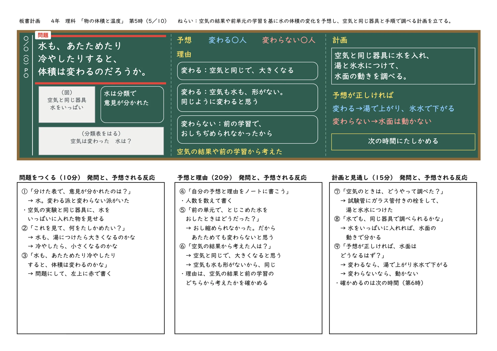
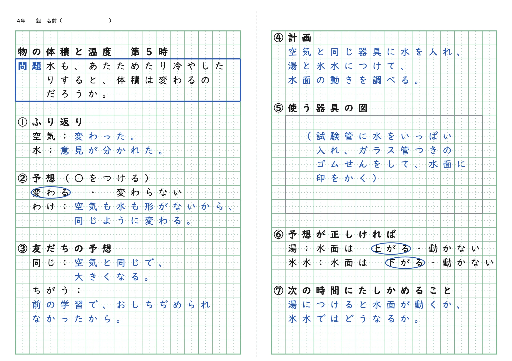
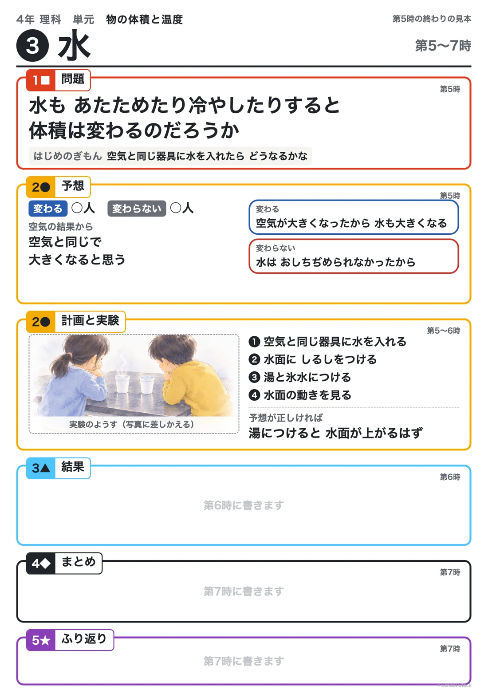

第5時 第２次 水①
問題水も、あたためたり冷やしたりすると、体積は変わるのだろうか
Board

Notebook

Aim
水も、あたためたり冷やしたりすると体積は変わるのかという問題について、空気の結果や前の単元の学習を基に予想し、空気と同じ器具と手順で調べる計画を立てる活動を通して、根拠のある予想と結果の見通しを表現することができる。
Assessment
| 観点 | 評価規準 | 方法 |
|---|---|---|
| 思考・判断・表現 | 空気の結果や前の単元の学習と関係付けて、水の体積の変化について根拠のある予想を表現し、結果の見通しをもって計画を立てている。 | ノート・発言 |
Flow
| 配時 | 学習活動 | 指導上の留意点 |
|---|---|---|
| 10分 | １ 分類で意見が分かれた水を取り上げ、問題をつくる。 | 〇 空気と同じ器具に水をいっぱいに入れた物を見せ、気づいたことから問題をつくる。 |
| 20分 | ２ 予想と理由をノートに書き、伝え合う。 | 〇 理由が空気の結果からか、前の単元の学習からかを確かめながら聞き合わせる。 〇 「おし縮められないから変わらない」という考えには、「おしたときと、あたためたときは同じことかな」と問い、どちらの考えも残す。 |
| 15分 | ３ 空気のときの方法を基に、計画を立てて結果を見通す。 | 〇 空気の実験の写真を見せ、同じ器具と同じ手順で調べられることに気づかせる。 〇 「予想が正しければ、水面はどうなるはずかな」と問い、結果の見通しを言葉にさせる。確かめるのは次の時間にする。 |
配時は45分の目安です。
Learning trail

More
水も、あたためたり冷やしたりすると、体積は変わるのだろうか
器具・準備
手順
結果の見通し 変わるなら、湯につけると水面が上がり、氷水につけると下がるはず。変わらないなら、水面は動かないはず。確かめるのは次の時間。
水も、あたためたり冷やしたりすると体積が変わるのかを、空気と同じ器具と手順で確かめる。変わるなら、湯につけると水面が上がるはず。
湯と氷水につけると、水面は本当に動くのだろうか。
空気の結論と分類表とを関係付け、「水も、あたためたり冷やしたりすると、体積は変わるのだろうか」という問題を見いだす。 空気の結果や前単元の学習と関係付け、「空気と同じで大きくなる」「水は変わらない」など、根拠のある予想を発想し、表現している。